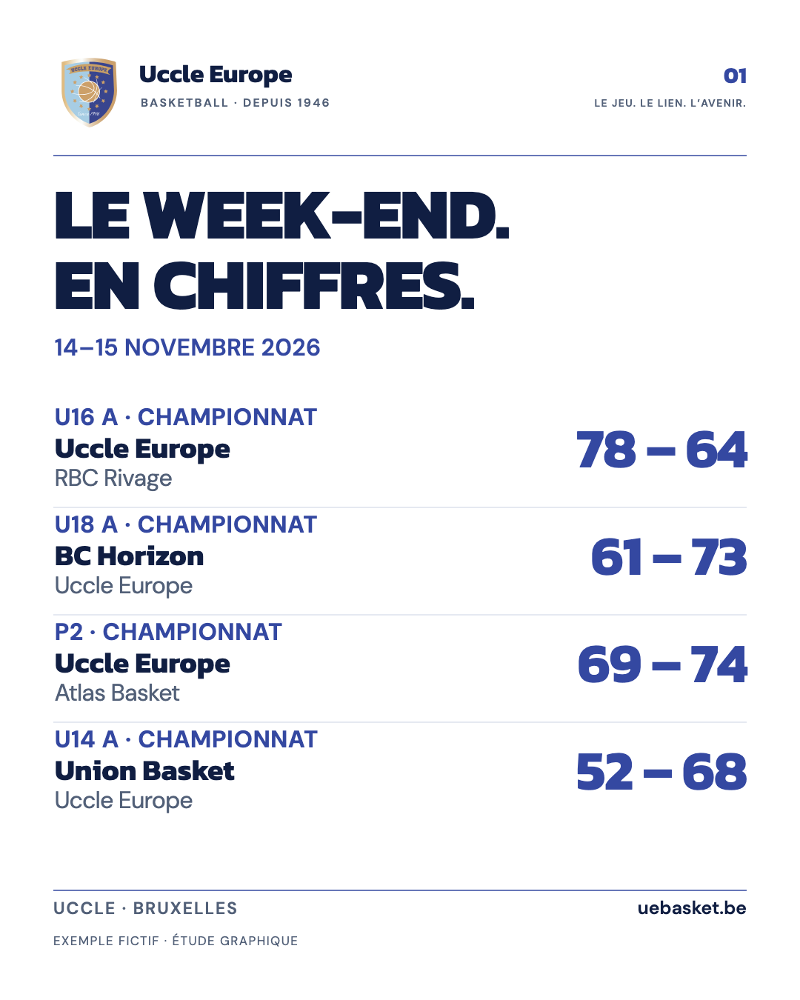
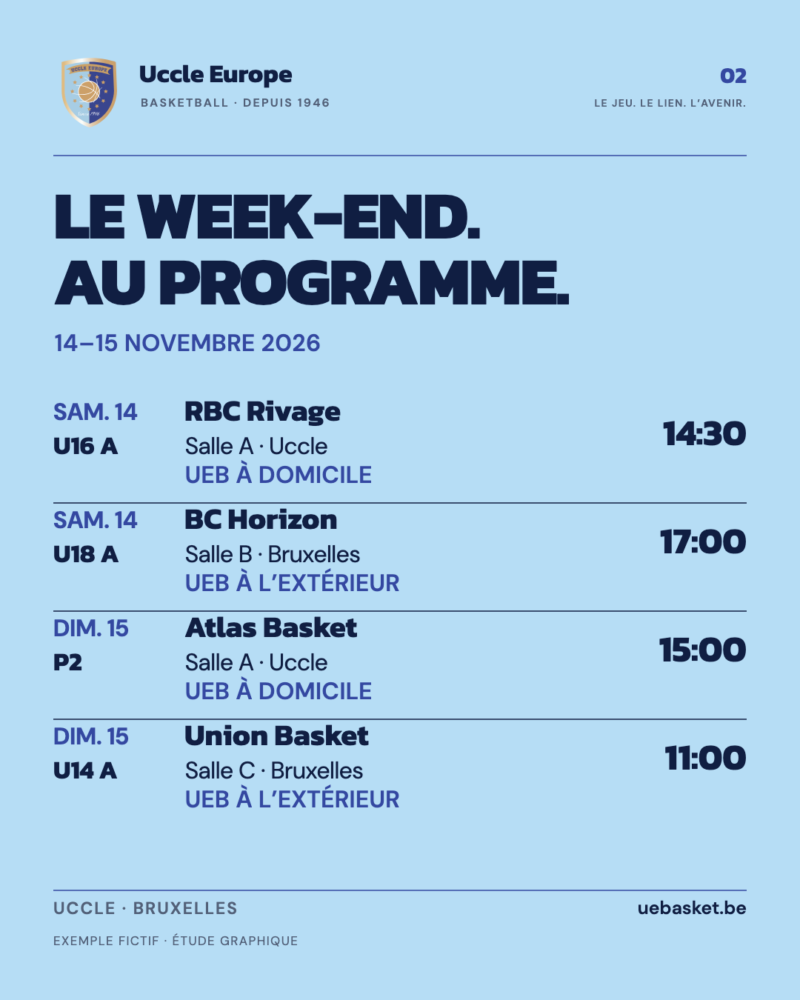
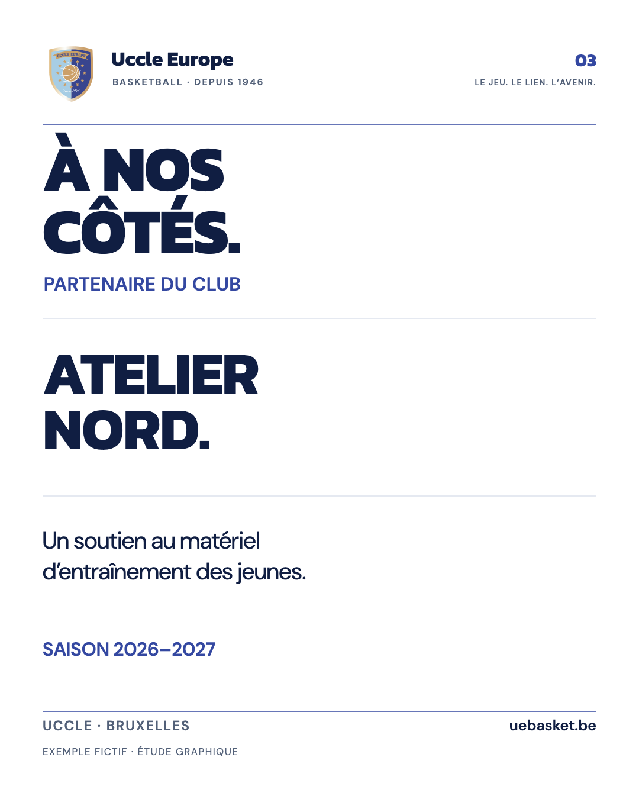
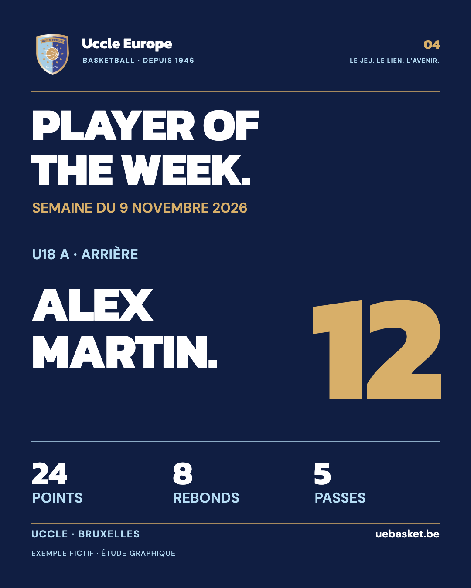
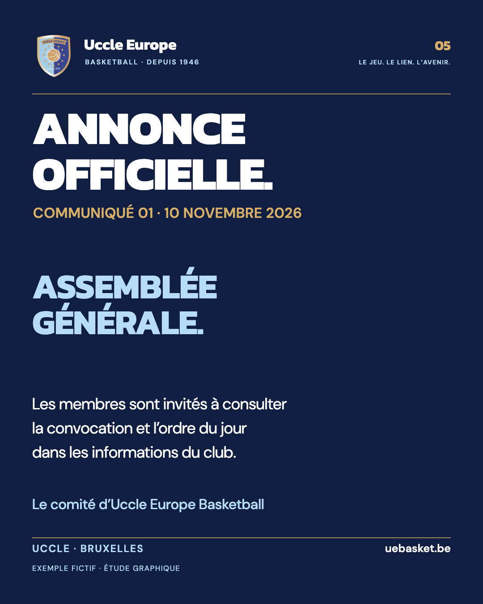
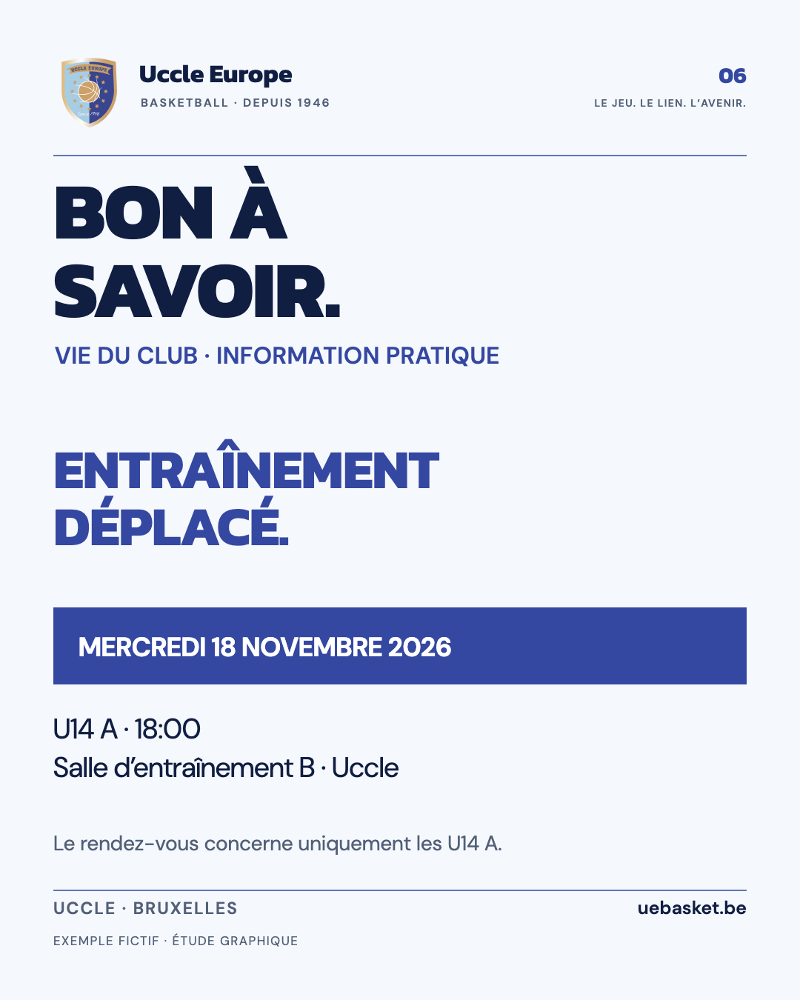
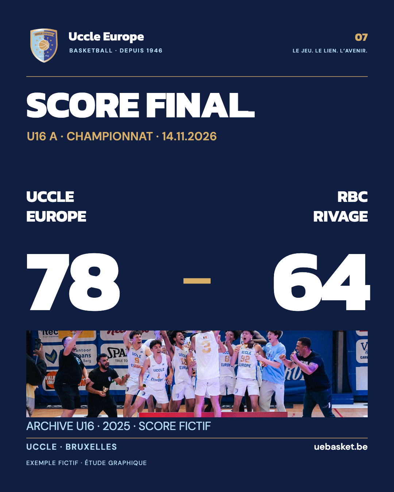

Uccle Europe Basketball · Proposition de templates · Novembre 2026
Identité publique 2026Exemples fictifs, hors diffusion







UNE MÊME FAMILLE.SEPT RENDEZ-VOUS.
Grille stable. Typographie forte.Couleur mesurée. Place au club.
Proposition à revoir · v01Les exemples sont fictifs.